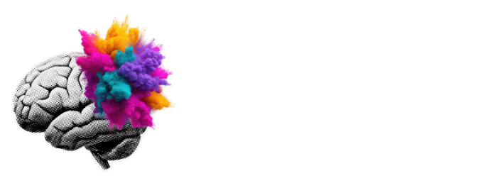
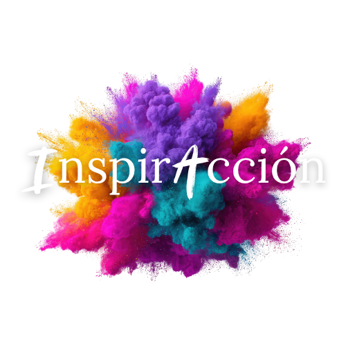

Observar y detectar con anticipación
La velocidad en este juego implica reconocer los cambios de estado interno y salir con mayor rapidez del sufrimiento, el estrés o la culpa.

Generación 4 · Enero 2027

Grupos de estudio y laboratorios aplicados a todas las áreas de tu vida, usando las situaciones cotidianas para liberar programas limitantes y lealtades inconscientes, y así desbloquear tu pensamiento intuitivo.
Requisito: certificado de InspirAcción Nivel 1.
De método a filosofía de vida
En Nivel 1 aprendiste a ver los mecanismos de enredo que usa el ego para bloquearte y a comenzar a cuestionar tus percepciones. En muchos casos, a poner límites y concretar cambios de vida. Esto te trajo una extraña combinación entre resistencia y paz. Pero confirmaste tu resonancia inicial.
Saliste del ego, podés ver más allá. Ahora comienza el verdadero juego.
En Nivel 2 el método se vuelve intuitivo porque conocemos la verdadera intuición y las trampas de la mente.
Ahora comienza el desafío de hacer uso activo de esta nueva habilidad y extenderla siendo testimonio y ejemplo para otros. Para esto es clave una comunidad comprometida con la práctica y el estudio profundo, una supervisión de la aplicación del método y el análisis de las mecánicas del ego en casos reales.
Nivel 2 presenta algo más que un método: una filosofía de vida cuya asimilación requiere necesariamente haber atravesado el nivel de compromiso práctico que ocurre en “El Entrenamiento del Guerrero” (Nivel 1).
Quiero seguir entrenando →“La acción inspirada es la habilidad de invertir las polaridades de nuestras percepciones para develar el propósito de lo que nos ocurre en la vida.”
Escuela del Pensamiento IntuitivoLa velocidad en este juego implica reconocer los cambios de estado interno y salir con mayor rapidez del sufrimiento, el estrés o la culpa.
La habilidad principal de la libertad emocional es la correcta digestión y asimilación de la realidad. ¿Qué hago ahora con esto que sucedió? ¿Qué siento? ¿Qué me conviene? Para esto aplicamos en casos reales y en tiempo real la comprensión y el cambio de perspectiva.
Se trata de la toma de decisiones intuitivas, libres de condiciones, cargas y culpas, gracias a tu entrenamiento anterior, incluso sin certezas.
Tomá el protagonismo de tu vida desde la inteligencia emocional práctica y el coraje que requiere ser creador de tu camino.
Formato

Un beneficio por seguir entrenando
Parte de la esencia de la Escuela es asumir tu libertad de potenciar tu camino con una guía personalizada. Las sesiones 1-1 del MCI guiadas por Agustín son procesos de acompañamiento de corta duración (entre 1 y 3 sesiones).
Por eso, mientras seas alumno regular y estés cursando en cualquiera de nuestros programas, contás con un 40% de descuento en las sesiones uno a uno con Agus.
Quiero continuar mi entrenamiento →Lo que cambia cuando entrenás tu libertad
Testimonios de participantes de InspirAcción Nivel 2.
“Descubrí que puedo elegir como actuar o responder ante ciertas situaciones y sentirme libre con eso. Puede también experimentar la sensación de no desesperarme por resolver y habitar la incertidumbre.”Guadalupe F · N1, N2 y Formación
“InspirAcción a diferencia de otros programas, te da herramientas REALES Y PRÁCTICAS para aplicar HOY en tu vida. No te pide nada que no tengas, no subestima, al contrario, te obliga amorosamente a ponerse en el lugar de creador que te corresponde como ser humano.”Yamila M
“La transformación ha sido acelerada, solté la culpa, la vergüenza y el poder merecer realmente como me siento. La nueva forma de vincularme con lo que soy y lo que hago empieza a tener coherencia... elegí hoy volver al juego, la alegría a disfrutar.”Camila F
“A meses de comenzar el entrenamiento me mudé a otra ciudad, y cambié de trabajo. Volví a encontrarme con un chico que hacía meses no veía, y hoy es mi pareja. El vínculo con mi papá se transformó y hoy pensamos en proyectos juntos. [...] Antes no me gustaba bailar, ahora sí y doy clases de eso para enseñarlo y aprenderlo aún más.”Guadalupe F
“Puse límites concretos a mi madre. Avance, contraté equipo e invertí a favor de mi negocio. Retome mi podcast. Empecé a pagar deudas ya estoy casi en cero.”Tamara V
“Eche a alguien a los 2 meses de estar trabajando porque 'lo sentí' y termine contratando 2 personas con las que estoy más que satisfecho. Económicamente mi empresa se volvió rentable y escalable [...] Me mudo en 2 semanas a un depto más grande y lindo.”Ricardo D
“Deje de trabajar con mi socio que hace años me molestaba su forma de ver las cosas. puse límites a mis servicios, horarios y la hiper flexibilidad de querer agradar siempre. cambie a mi hija de colegio a jornada simple para que tenga más tiempo de ocio [...] me endeude económicamente, esto me angustiaba y paraliza, pero hoy lo veo como una inversión que está en proceso de equilibrio”Camila F
“Decidí encarar una charla con mi papá biológico, al que no le hablo desde mis 4 años, si bien la charla no ocurrió, el solo hecho de hablarle y decírselo me liberó un montón de peso, cargas, miedos. [...] Apareció una mudanza que venía deseando, con el espacio para mis clases que también venía pidiendo.”Lorena A
“Menos enojos, elongo y escribo todas las mañanas, me veo más linda. Cambió bastante el modo de pensar a mí papá y x ende de vincular me con él. [...] Retomé el activismo de manera fluida sin sufrir sin culpas sin miedo sin vergüenza.”Mariana D
“Algo de mi vínculo con mi papa se movió, y algo súper interesante es que pude darle un abrazo, algo que no ocurría, no se daba, no fluía, como con cierta resistencia, y un dia se destrabo, rompí con esa barrera de distancia. fue un momento hermoso, aún así desconocido.”Natalia C
Early bird · Cupos limitados
Sos parte de la Escuela y ya conocés la experiencia. Podés reservar tu lugar con el valor vigente y continuar el recorrido que ya comenzaste.
Ahorrás USD 100 sobre el valor de lista. Congelalo abonando USD 150 ahora y completá el 50% restante hasta el 5 de enero.
Quiero asegurar mi lugar con USD 150El valor queda congelado con el pago de la reserva, una vez verificado por el equipo.
Si necesitás una consideración especial para realizar el pago, podés consultar con Jose, del equipo administrativo. Vamos a evaluar tu situación de forma personalizada.
Hablar con Jose →Reserva de lugar
Al continuar vas a recibir los datos correspondientes al medio elegido. Tu lugar queda confirmado cuando el equipo verifica el comprobante.
Siguiente paso
El recorrido continúa
La Formación comienza en marzo de 2027. Está dirigida a quienes ya completaron Nivel 2.
Antes de decidir
Para quienes completaron Nivel 1: tanto la Generación 4 que finaliza ahora como participantes anteriores que todavía no hicieron Nivel 2.
Durante enero y febrero de 2027.
Sí. Nivel 2 retoma el entrenamiento desde la experiencia de Nivel 1.
Las sesiones quedan grabadas para que puedas verlas en diferido.
La referencia es de 2 a 6 horas semanales entre lectura, escritura, prácticas y sesiones. Pensalo como un gimnasio: lo central es entrenar.
Hasta el 15 de octubre de 2026, el valor early bird es de USD 300. Lo congelás abonando una reserva de USD 150 (el 50%). El saldo de USD 150 debe estar abonado a más tardar el 5 de enero de 2027. Tu reserva queda confirmada cuando el equipo verifica el pago.
Sí. Si elegís pesos argentinos, vas a ver el importe de la reserva calculado con el dólar blue venta de DólarHoy, junto con la fecha y hora de actualización de la cotización. Si elegís dólares, te mostramos los medios de pago disponibles. Para otra moneda, tenés un acceso directo a WhatsApp para consultar con Jose la cotización del día y el medio de pago adecuado.
Generación 4 · Enero y febrero 2027
Si ya completaste Nivel 1, podés iniciar ahora la reserva de tu lugar.
Quiero reservar mi lugarRegistrá tus datos, realizá el pago y envianos tu comprobante.